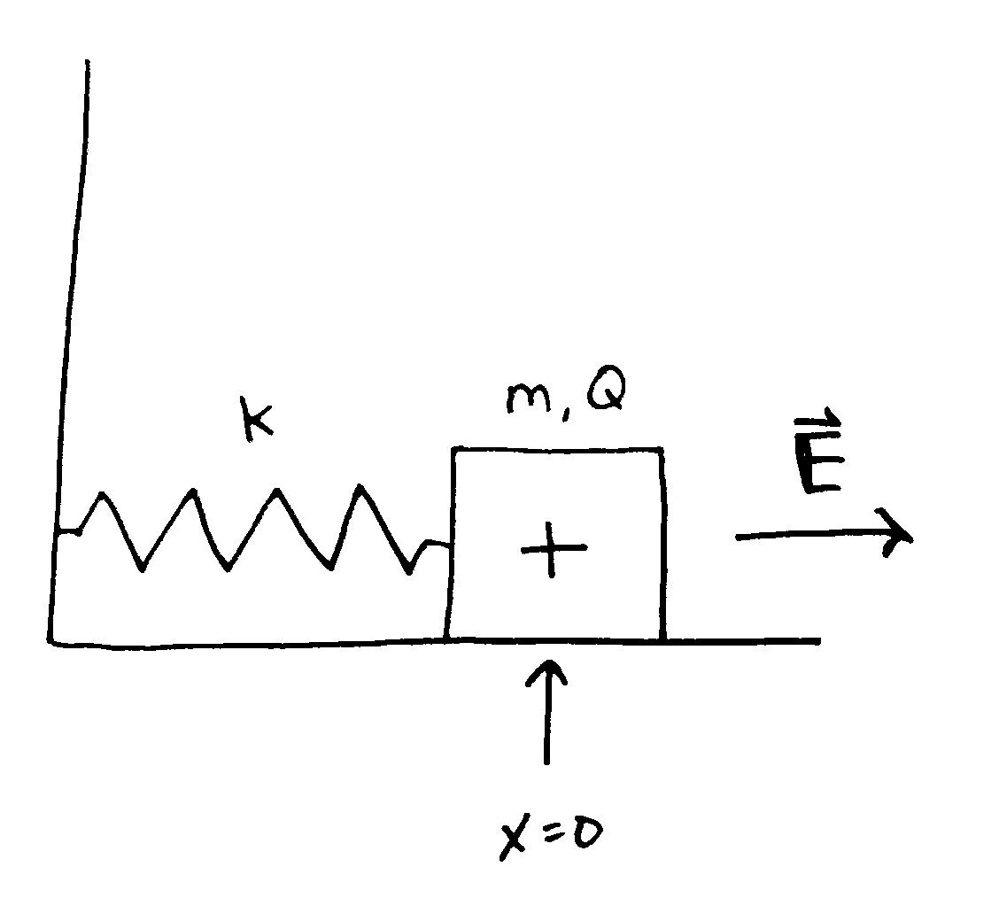
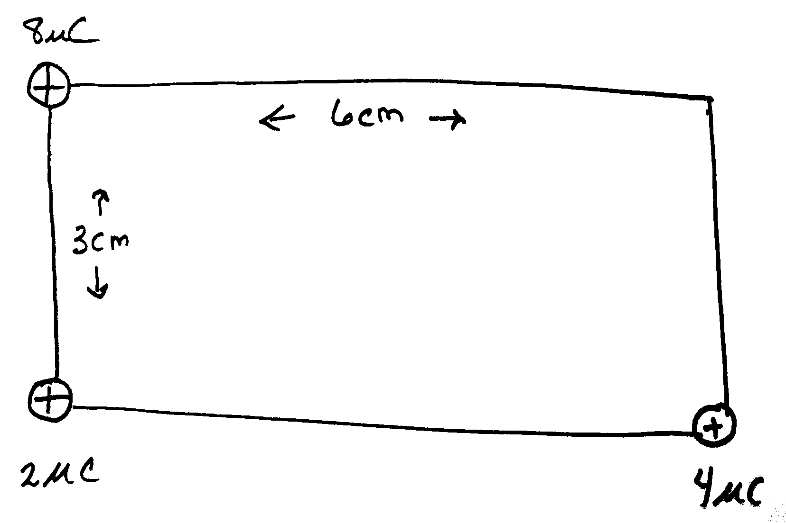
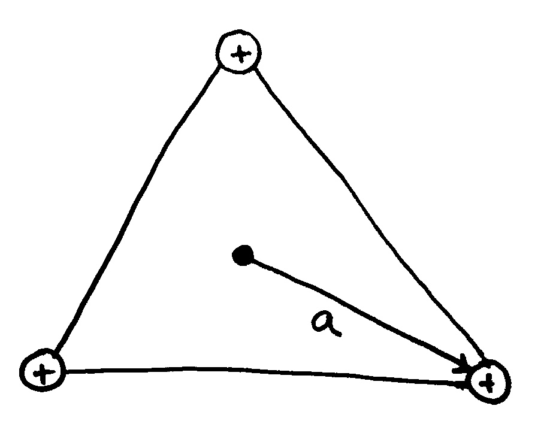
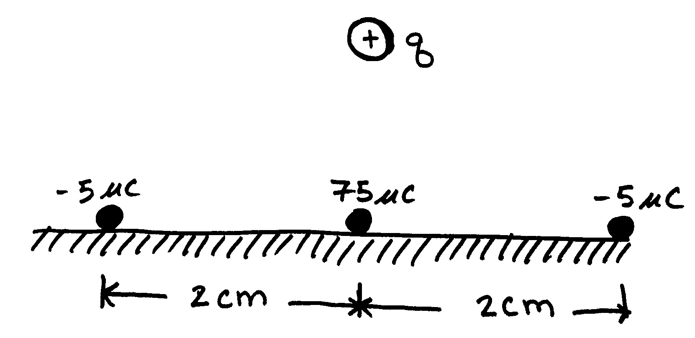

Phy112 HW1.2 - Electric Potential
Problem 1.2.1
A tiny sphere of mass \(8.00 \, \text{mg}\) and charge \(22.80 \, \text{nC}\) is initially at a distance of \(1.60 \, \text{mm}\) from a fixed charge of \(18.50 \, \text{nC}\). If the \(8.00 \, \text{mg}\) sphere is released from rest, find (a) its kinetic energy when it is \(0.500 \, \text{mm}\) from the fixed charge and (b) its speed when it is \(0.500 \, \text{mm}\) from the fixed charge.
Problem 1.2.2
A \(74.0~g\) block carrying a charge \(Q=35.0 ~ \mu C\) is connected to a spring for which \(k=78.0~N/m\). The block lies on a frictionless, horizontal surface and is immersed in a uniform electric field of magnitude \(E=4.86 * 10^4 ~N/C\) directed as shown in the below figure. If the block is released from rest when the spring is unstretched (\(x=0\)),
- by what maximum distance does the block move from its initial position? [4.36 cm]
- Find the subsequent equilibrium position of the block and the amplitude of its motion. [2.18 cm]
- Using conservation of energy, find a symbolic relationship giving the potential difference between its initial position and the point of maximum extension in terms of the spring constant \(k\), the amplitude \(A\), and the charge \(Q\). [\(-2kA^2/Q\)]

Problem 1.2.3
- Find the electric potential, taking zero at infinity, at the upper right corner( the corner without a charge) of the rectangle in the below figure. [\(2.67*10^6~V\)]
- Repeat if the \(2.00~\mu C\) charge is replaced with a charge of \(-2.00~\mu C\). [\(2.13*10^6~V\)]

Problem 1.2.4
Three identical point charges each of charge \(q\) are located at the vertices of an equilateral triangle as in the below figure. The distance from the center of the triangle to each vertex is \(a\).
- Show that the electric field at the center of the triangle is zero.
- Find a symbolic expression for the electric potential at the center of the triangle.[\(3\, k_e q / r\)]
- Give a physical explanation of the fact that the electric potential is not zero, yet the electric field is zero at the center.

Problem 1.2.5
A positively charged ball with charge \(q = 40.0~\mu C\) and a mass of \(20~g\) starts at rest above 3 stationary charges as shown below. The bottom 3 charges are glued to the table and are not allowed to move. The ball is released from a height \(h = 1.50~cm\) above the table and moves in a direction directly upward from the table.Find the velocity the ball reaches at a height of \(4.00~cm\) above the table. (Hint: Calculate the electric potential of the point charges at the initial and final ball locations. These two electric potentials are then input into the conservation of energy. Solving for the kinetic energy allows you to calculate the final velocity of the charged particle)
